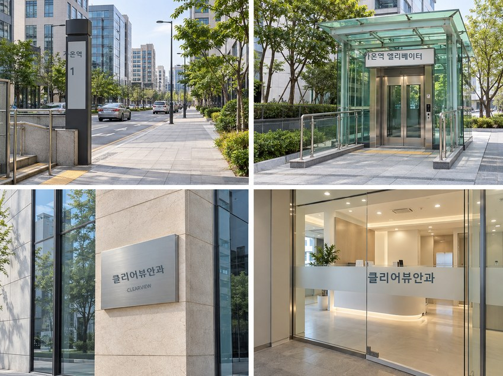
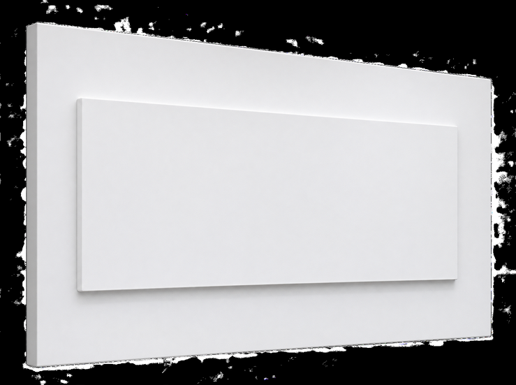
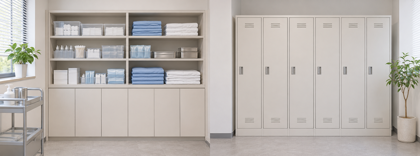
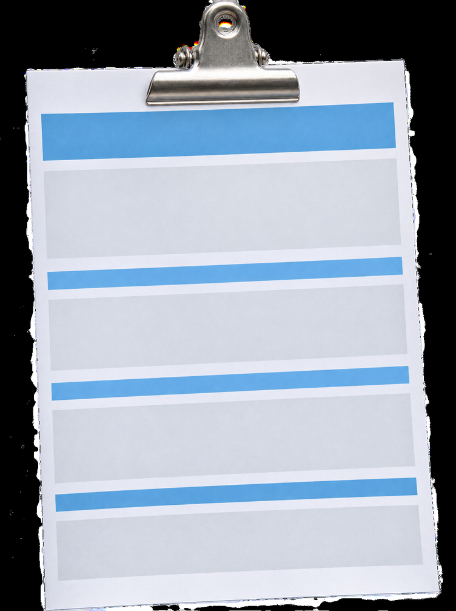
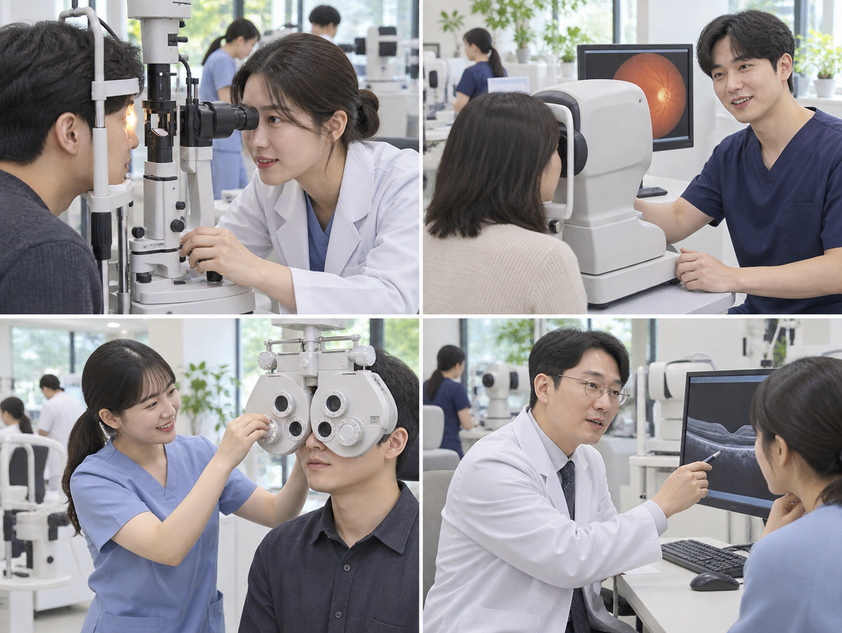

눈 정기검진 | 망막 열공 치료 후기
- 이**
- 수술일 2025.05.21
리뷰 내용
- 교정전
- 교정후
안녕하세요, 오늘 제 눈 검사 경험을 적어볼게요.
검진받은 경험을 적어볼게요.
얼마 전 눈이 불편해 검사를 받아봤어요.
나이가 들며 눈이 침침해졌어요.
가까운 글씨도 흐릿했어요.
가까운 글씨에 초점이 잘 맞지 않아 노안인지 궁금했어요. 상태를 확인하려고 안과를 찾아 검사를 받았습니다.
가까운 곳과 먼 곳을 번갈아 보다가 갑자기 물건 위치를
다시 확인하게 되면
눈 근육이 초점을 맞추는 과정도 알게 됐어요.
초점을 맞추는 게 전보다 낯설게 느껴졌어요.
전에 없던 낯선 느낌이 불편해 안과를 찾았습니다.

제가 찾아간 곳은 역 근처에 있었고
클리어뷰안과입니다.
주변 지인들도 수술을 받았어요.
시력교정술을 받은 지인도 많았고
남편도 이십 대 때 시력교정 수술을 받았다고 하더라구요.
눈 종합검사할 곳을 알아봤어요.
클리어뷰안과의원을 찾게 되었습니다.
찾아가는 길은 어렵지 않았어요.
안내받은 경로를 따라 엘리베이터를 타고
건물 안으로 들어가 안내 표지를 따라갔어요.
엘리베이터에서 내리니 병원이 있는 층에 도착했어요.
엘리베이터에서 내리면
벽에는 눈 건강을 생각하게 하는 문구가 보였고
눈 상태뿐 아니라 그 뒤의 생활도 돌아보게 됐어요.
그 문구가 입구에서 먼저 눈에 들어왔어요.
예전에는 크게 생각하지 않았지만
요즘은 조금씩 달라졌고
눈이 편해야 일상도 한결 수월하다는 걸
요즘은 더 자주 생각하게 됐어요.

예전에 이미지 관련 교육을 하면서
안경을 스타일에 맞춰 쓰기도 하지만
안경 때문에 불편해하는 분들을
종종 보기도 했고요.
눈 관리도 제 인상에 영향을 준다고 느꼈어요.
평소 눈 상태도 잘 챙겨야겠다고 느껴요.

안내데스크에서 반갑게 맞아주셨어요.
직원분이 먼저 맞아 주셨어요.
검사를 받으러 왔다고 말씀드리자
치료 방법과 진행 과정을 친절하게 설명해 주셨어요.
설문지를 작성할 준비를 하는 동안
잠시 대기 하라 하시더군요.
기다리는 동안 병원 안을 천천히 둘러봤어요.
기다리는 동안 따뜻한 차도 마실 수 있었고
옷과 소지품을 둘 수 있는 개인 보관함도 마련되어 있어
차분히 앉아 순서를 기다릴 수 있었고
옷장마다 비밀번호가 있어 안심했어요.
비밀번호를 설정해 두니 보관할 때 마음이 놓였어요.
- 중략 -
산동 검사 동의서 설명을 받았습니다.
동의서와 문진표를 읽은 뒤 해당 항목을 표시하도록
문진표 작성 방법을 설명해 주셨어요.
종합검사에서는 동공을 넓혀 눈의 여러 부분을 확인한다고 들었어요.
검사에 필요한 점안 절차도 미리 안내받았어요.
- 중략 -

동공을 넓히는 검사를 받고 나니 불편한 점도 있었어요.
불편할 수 있는 점을 여러 번 설명해 주셨고
시간이 지나면 시야가 흐려질 수 있다고 들었고
검사 뒤 운전은 피하라는 설명도 들었어요.
저는 괜찮겠지 생각했는데
안경을 벗으니 시야가 번졌어요.
예상보다 시야가 많이 흐려져서 조금 당황했어요.
직원분이 안경을 벗어보면 조금 편할 수 있다고 하셔서
말씀대로 안경을 벗어보니 제게는
조금 더 편하게 느껴졌어요.
학창 시절 시력이 좋을 때 안경을 쓰면 더 흐려 보이던
그때와 비슷한 느낌이 잠깐 들었어요.
동공이 충분히 커진 뒤 검사실로 들어갔어요.
검사실에서는 장비를 하나씩 차례로 이용하며
눈 상태를 여러 항목으로 확인했어요.
안경원에서 본 것과 비슷한 기계도 있었고
처음 받아보는 검사도 있었어요.
안경을 30년 가까이 써 왔어요.
안경 렌즈를 바꿀 때만 검진했어요.
조금 아쉽게 느껴졌어요.
치과 검진은 매년 챙겼는데
눈 검진은 미뤄왔어요.

몸과 관련된 검사를 받을 때면 저도 늘 긴장돼요.
이번 안과 검사에서도 긴장되는 건 마찬가지였어요.
혹시 이상이 있지 않을까 걱정도 됐고요.
검사를 마친 뒤 잠시 기다렸다가
정기검진 결과지를 받아
상담실에서 결과를 하나씩 설명 들었어요.
자료를 보며 설명을 들었고
굴절검사에서는 중간 정도 근시와 난시가 함께 확인됐어요.
이 내용은 이미 알고 있어 따로 놀라지는 않았어요.
평소 알고 있던 시력 상태도 다시 확인했어요.
그래도 다행히 아직 노안은 아니라고 하더라고요^^;
검사 항목을 하나씩 살펴보며 현재 상태를 확인했어요.
진료 때 건조 증상으로 시야가 흐릴 수 있다고 들었어요.
검사표에서 오른쪽과 왼쪽 각막 두께를 확인했어요.
각막 지름은 오른쪽 11.2 / 왼쪽 11.4
제 검사 수치는 모두 평균 범위 안에 있다고 들었어요.
안압은 오른쪽과 왼쪽 모두 13으로 적혀 있었어요.
평소 범위와 비슷하다고 하셨어요.
야간 동공은 좌우 5.5, 5.8로 적혔어요.
동공이 작아 빛 번짐 가능성이 낮대요.
전방 깊이와 각막 내피세포도 정상 범위라고 들었어요.
검진 결과는 전반적으로 괜찮은 편이라 안심했어요.
상담이 이어지던 중
검진 상담 뒤 진료를 받으면서
망막에 작은 열공이 보인다는 설명을 들었어요.
- 중략 -
망막 열공이 더 진행되면 망막박리로 이어질 수 있어
가능한 이른 시기에 치료하는 편이 좋다고 하셨어요.
- 중략 -
레이저로 치료할 수 있다고 설명을 듣고
산동 검사를 한 상태라 그날 바로 치료를 받았어요.
추후 치료 때도 산동이 필요하대요.
미루기보다 바로 진행하는 게 낫겠다고 생각해
그 자리에서 치료를 받았어요.
레이저 치료가 아플 수 있다고 미리 들었고
중간에 눈을 많이 움직이지 말라고 하셨어요.
눈을 가능한 한 깜박이지 않도록 신경 썼어요.
너무 긴장해서 기계를 잡은 손에 땀이 날 정도였어요!
걱정했던 것과 달리
저는 예상한 것보다 잘 견딜 수 있었어요.
긴장했지만 제 경험으로는 감당할 만했어요.
작은 열공이라 처치는 5분도 안 걸렸어요.
생각보다 짧게 마무리된 덕분인 것 같아요.
검사 결과를 듣고 나니 운이 좋았다는 말이 실감났어요!
안과 종합검진을 꼼꼼히 받은 것 같아 마음이 놓였어요.
앞으로는 정기검진을 챙겨야겠다고 느껴서
일정한 간격으로 눈 상태를 확인하려고 해요.
망막 열공 치료 뒤에는
정기검진을 이어가는 게 좋다는 점도 알게 됐어요.
그 점을 기억해 두려고요.
앞으로는 눈뿐 아니라 몸의 다른 부분도
필요할 때 살펴보며 잘 챙겨야겠어요.
- 중략 -
이번 경험을 통해 종합검진을 받아보는 것도
눈 상태를 확인하는 계기가 된다는 걸 느꼈어요.
직원분들이 친절하게 안내해 주셨고
저도 궁금한 내용을 물어볼 수 있었어요.
여러 장비로 검사해 보니 세부 항목까지
확인할 수 있어 검진의 필요성을 실감했어요.
저는 미리 예약하고 방문해 대기 시간을 줄였고
다음에도 예약을 확인하고 갈 생각이에요.
저도 앞으로 제 몸을 더 세심하게 살펴보려고요.
눈 건강은 클리어뷰안과의원에서
이상, 제가 받아본 눈 검진 경험을 적어봤어요.
출처 : 환자 블로그 후기
- 교정전
- 교정후